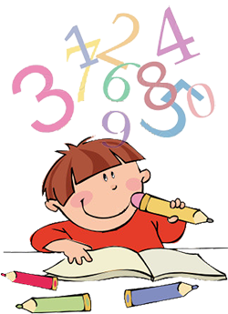

Recursos de Apoyo para Padres

Cálculo Mental para Primaria
Una herramienta interactiva para que los niños practiquen y mejoren sus habilidades de cálculo mental en suma, resta, multiplicación y división.
Ir a la HerramientaHerramienta de Crianza Positiva
Una guía con recursos y consejos prácticos para fomentar un ambiente familiar positivo y constructivo, fortaleciendo la relación con sus hijos.
Ir a la Herramienta